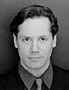

Sandy Day, Director of Production


Sandy comes to Sunrise with an extensive and
impressive background in the Theater. Trained as a
dancer and stage actor at Julliard, he
went on to
perform with several highly- acclaimed New York
Dance Repertoires. His performing career culminated
with his role as the
Swan in the Boston Classic Dance
Troop's worldwide tour of the "Ugly Duckling." Sandy
walked away from this career when his twin brother,
also an acclaimed dancer, died tragically while on tour
in Russia. The dance world's loss was Hollywood's
gain. Mr. Day came to Sunrise
after working two years
for Richard Simmons' Productions. He ascended the
production ranks here rather quickly as a Coordinator,
Production Manager, Line Producer and a Post-
Production Coordinator under Arnie Reisner. He is now
in charge of our day-to-day
production.